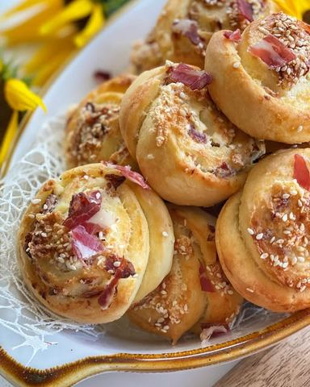

Puter pužići sa pršutom i sirom

Moja beleška
SačuvanoHajde da ovu subotu zaslanimo i da vam ostavim recept za pužice mekane kao duša 🥰 Neka vam se na stolu nadju za dorucak, večeru ili užinu, uz šolju jogurta, a vole ih i mali i veliki 🥰 Sastojci: Testo 🥯
Sastojci
Priprema
Premaz 🥄 Mlaku vodu, kvasac, kašičicu šećera i kašiku brašna izmešati i ostaviti da kvasac nadodje nekih 10ak minuta. Potom to sjediniti sa ostalim sastojcima za testo i umesiti ga. Pokriveno ostaviti nekih 45 minuta da nadodje i uduplira se. Na pobrašnjenoj podlozi razviti testo u oblik pravougaonika. Prvo ga premazati umućenim zumancetom i puterom (neka puter bude potpuno mekan-sobne temperature) a onda i umešanom smesom feta sir, pršutom i belancetom. Urolati testo i seći nožem, postavljati na pleh obložen papirom za pečenje, narendati još malko putera i posuti susamom. Neka pužići narastaju još 10-15 minuta dok se rerna lepo ugreje na 220C, pa ih prvih 10 minuta pecite na toj temperaturi, a onda još toliko na 180C. Naravno, kombinaciju za premazivanje možete po ukusu, a testo će vas oduseviti mekoćom i ukusom 🥰 Uživajte u vikendu ❤️
Originalni opis sa Instagrama
Puter pužići sa pršutom i sirom🥓🧀 Hajde da ovu subotu zaslanimo i da vam ostavim recept za pužice mekane kao duša 🥰 Neka vam se na stolu nadju za dorucak, večeru ili užinu, uz šolju jogurta, a vole ih i mali i veliki 🥰 Sastojci: Testo 🥯 •100 ml mlake vode •150 ml mlakog mleka •pola kockice svežeg ili 1 suvi kvasac •1/2 kašičice kristal šećera •kašičica soli •500 gr mekog belog brašna •2 kašičice praška za pecivo •100 ml ulja Premaz 🥄 •125 gr putera umućenih sa 1 zumancetom •100 gr feta sira umesano sa 1 belancetom i 100 gr sitnije seckane pršute •Preko puzića narendati još malo putera (60 gr otprilike) i posuti susamom pre pečenja ☺️ Mlaku vodu, kvasac, kašičicu šećera i kašiku brašna izmešati i ostaviti da kvasac nadodje nekih 10ak minuta. Potom to sjediniti sa ostalim sastojcima za testo i umesiti ga. Pokriveno ostaviti nekih 45 minuta da nadodje i uduplira se. Na pobrašnjenoj podlozi razviti testo u oblik pravougaonika. Prvo ga premazati umućenim zumancetom i puterom (neka puter bude potpuno mekan-sobne temperature) a onda i umešanom smesom feta sir, pršutom i belancetom. Urolati testo i seći nožem, postavljati na pleh obložen papirom za pečenje, narendati još malko putera i posuti susamom. Neka pužići narastaju još 10-15 minuta dok se rerna lepo ugreje na 220C, pa ih prvih 10 minuta pecite na toj temperaturi, a onda još toliko na 180C. Naravno, kombinaciju za premazivanje možete po ukusu, a testo će vas oduseviti mekoćom i ukusom 🥰 Uživajte u vikendu ❤️ • • • #slanirecepti #pecivo #mirisnopecivo #puzici #idejezadorucak #idejezaveceru #idejezauzinu #testo #subotajutro #saltdough #breakfasttime #breakfastideas